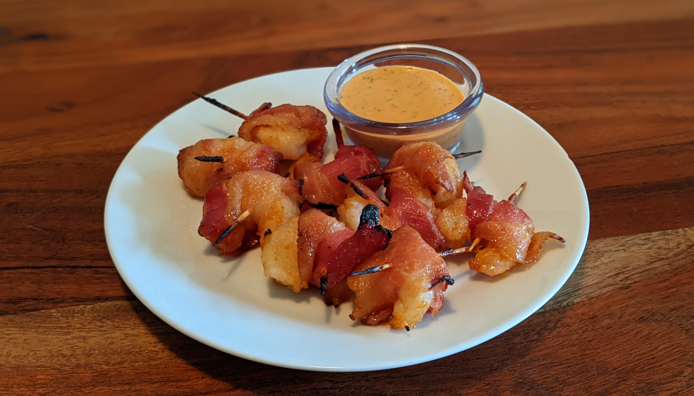

Bacon Wrapped Shrimp

Author: Holly Nilsson |
Cooked: July 23, 2022
Yields: 4 Servings | Prep Time: 15 Minutes | Cook Time: 10 Minutes
Ingredients
- 1 lb large shrimp, peeled and deveined, thawed
- 8 slices bacon
- 2 Tbs butter, melted
- 2 Tbs honey
- 2 Tbs barbecue sauce
- 1 Tbs sriracha
- 1/2 tsp garlic powder
- Salt and pepper
Directions
- Preheat oven to 375°F and line a baking sheet with foil. Cut bacon strips into thirds and place onto baking sheet. Cook for 5 minutes and remove from oven.
- Turn the oven to broil, and line the baking sheet with a new piece of foil.
- Combine the sauce ingredients into a bowl and mix to combine.
- Wrap each shrimp with a piece of bacon and secure with a toothpick. Then dip each shrimp into the sauce mixture and place onto baking sheet.
- Broil for about 10 minutes, turning the shrimp halfway through. Cook until bacon is done to preferred crispness.
Additional Notes
- As you can see in the image, our toothpicks burned... To prevent this, soak them in water for a few minutes before skewering.
- Shrimp weren't as sticky as I would have liked. Maybe try 1 Tbs butter next time.
- We used a Cajun remoulade for dipping.